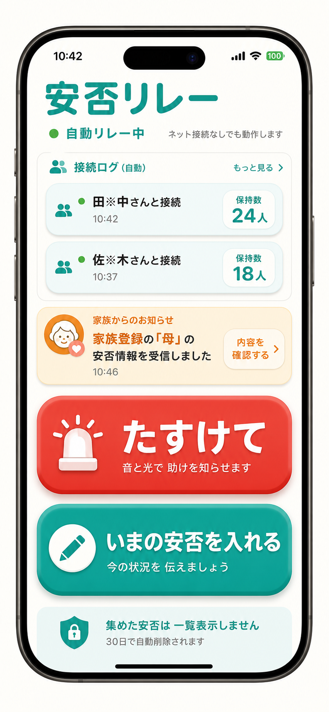

災害時の安否確認を、もっとやさしく。
災害時の通信遮断、これさえあれば避難所を移動して安否情報を受け渡せます
同じアプリ同士で安否情報を自動リレー。 避難所を移動しても、受け渡しが続きます。 ネットが戻った端末から、まとめて届けます。
- リレーは裏で自動
- TOPに接続ログを表示
- 名前と場所は伏せ字
10:42 未接続だった端末と接続しました。保持数は18人です。
10:46 新しい安否を3人分受け取りました。保持数は21人です。

TWO BUTTONS
押すのは「たすけて」と「いまの安否を入れる」だけ。
災害時は細かいメニューを探している余裕がありません。安否リレーは、助けを知らせる操作と、今の状況を入れる操作だけを大きく見せ、受け渡し自体は裏側で自動的に動かします。
音と光で周囲に知らせます。声が出しにくい時でも、近くの人に気づいてもらうための機能です。
無事、けが、避難所名、伝えたい一言など、今伝えたい情報だけを入れます。
安否情報の受け渡しはボタンを押さずに行い、TOPには接続ログだけを表示します。

RELAY
安否リレーは、ボタンではなく裏側で勝手に動く仕組みです。
ひとりの端末だけで完結させず、同じアプリを持つ人が近くにいるたびに情報を受け渡します。ユーザーはリレーボタンを押す必要がなく、TOPで「接続・受信ログ」と「何人分保持しているか」を確認できます。

名前、場所、時間、GPS、安否メッセージを端末に保存します。
同じアプリ同士が近くにいると、保持している安否を受け渡します。
接続日時、受信件数、保持人数を出して、受け渡しを見える化します。
通信が戻った端末から、安否情報をBANTEX側へまとめて送ります。
PRIVACY
接続ログと保持数。名前と場所は伏せ字。
端末内では接続ログや保持数を中心に表示し、保持している名前と場所は別枠で伏せ字にします。安否メッセージやCSVの詳細は一覧表示せず、ネット復旧後の送信に備えて端末内で保持します。
「接続しました」「保持数は24人です」のように、リレーが進んでいることを見せます。
先頭と最後を伏せて表示します。例: 「佐々木」は「※々※」、「山田太郎」は「※田太※」になります。
安否情報は長く残し続けず、一定期間で消える設計にします。
FUTURE
家族連携は、今後追加する場合の設計案です。
初期版では、受け取った安否の中身を一般画面に一覧表示しません。将来、家族だけに全文表示を追加する場合は、名前だけで判定せず、QRコードなどで共有した家族キーを使う設計にします。
代表者のiPhoneで家族グループを作り、家族キーを端末内に保存する案です。
家族にQRコードや招待コードを渡して、同じ家族グループに登録する想定です。
安否情報には、家族だけが開ける暗号化データを一緒に持たせる案です。
家族キーが一致した時だけ、通知して名前、場所、メッセージを表示する将来案です。
FREE
防災アプリにつき、完全無料。
安否リレーは、非常時に多くの人が使えることを最優先にします。課金機能や広告で使いにくくせず、いざという時に家族、避難所、地域で広がるアプリを目指します。
FAQ
よくある質問
インターネットがなくても使えますか？
助けを知らせる機能と、近くの端末との自動リレーは、ネットが不安定な場面を想定しています。ネット復旧後にまとめて送信する設計です。
安否リレーのボタンを押す必要はありますか？
ありません。ボタンは「たすけて」と「いまの安否を入れる」だけにし、安否情報の受け渡しはアプリの裏側で自動的に行う設計です。
家族の安否を全文表示できますか？
初期版では、一般画面に安否の詳細を一覧表示しません。家族だけに全文表示する機能は、QRコードなどで家族キーを共有する将来案として整理しています。
誰でも使える画面ですか？
大きなボタンと短い言葉を中心にし、お年寄りでも迷いにくい画面を目指しています。
いつ公開予定ですか？
現在はiPhone版の公開準備中です。実機検証とApp Store公開準備を進めています。